Interior
The fifth floor of Hotel Gdańsk Boutique: warm wood, bouclé, dried flowers and a view of the Motława. See where you will unwind.
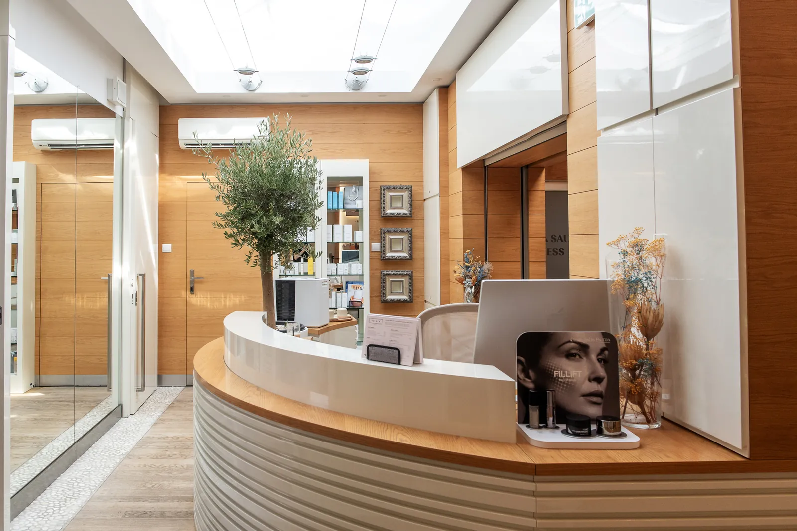
Reception and lounge
Every visit starts here: a wooden desk, an olive tree, bouclé sofas and dried flowers.


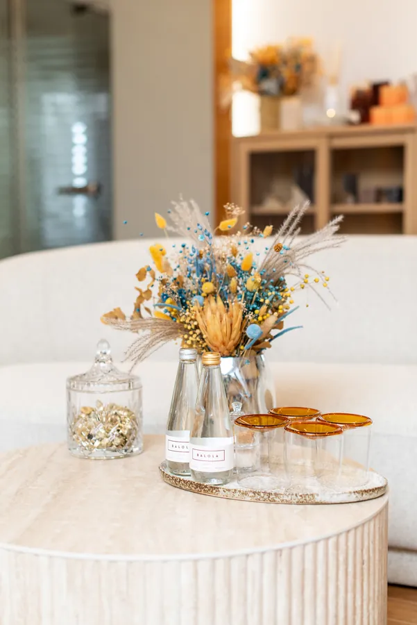
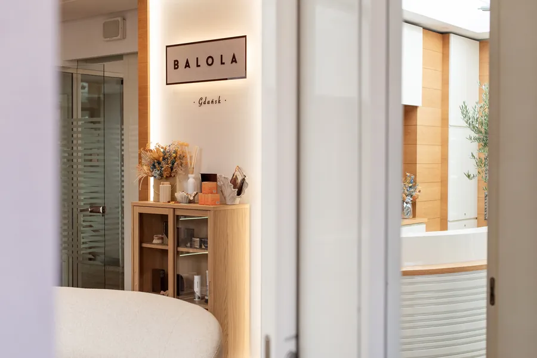
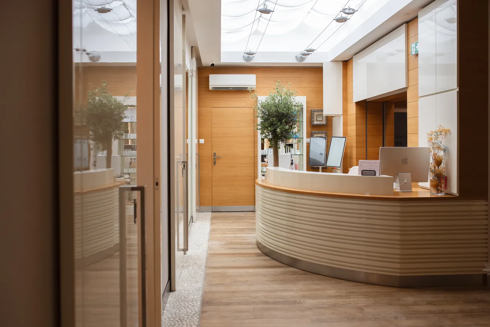


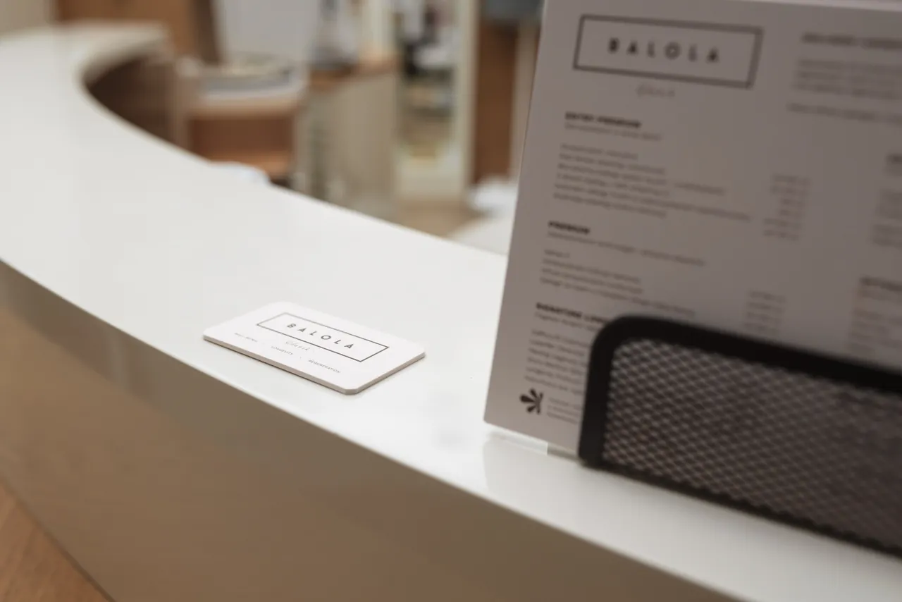
Treatment rooms
Warm light, wood and windows overlooking the granaries by the Motława.
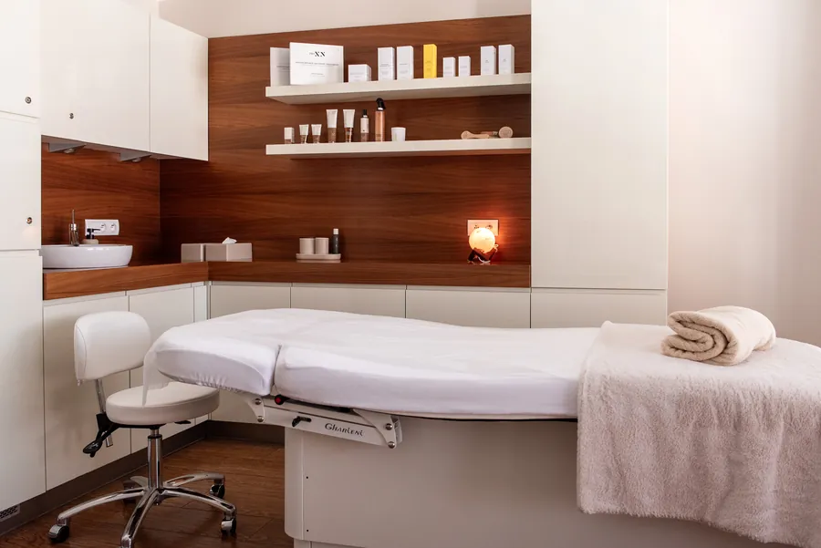


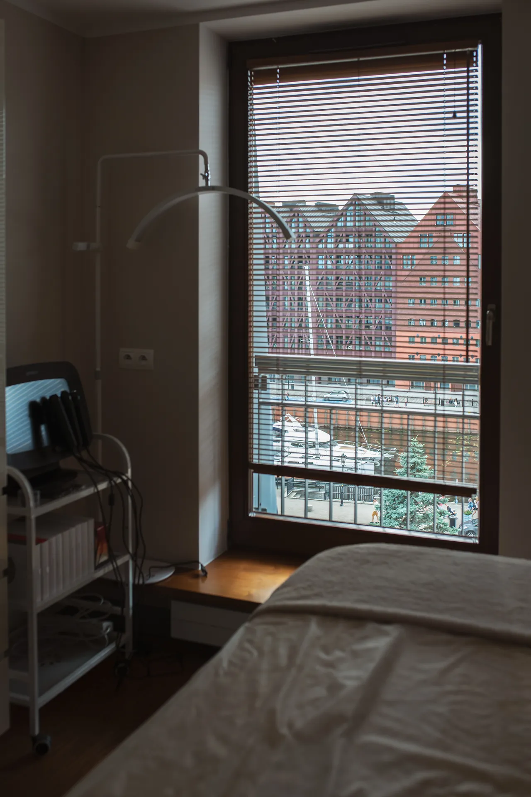

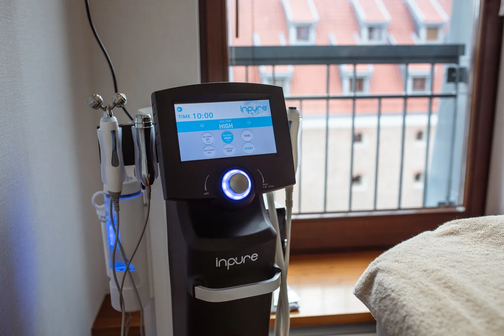
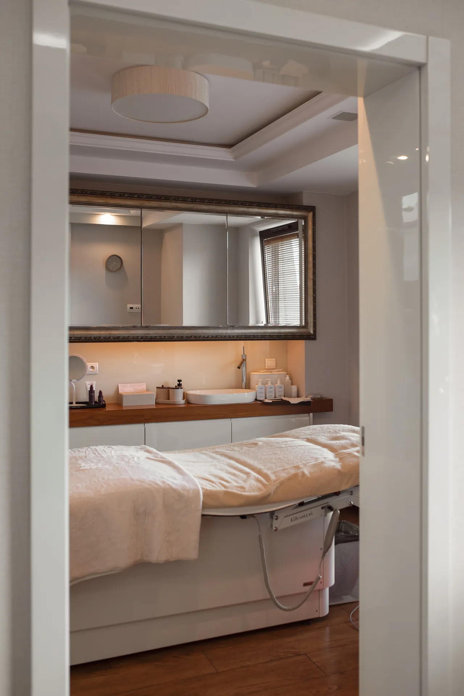
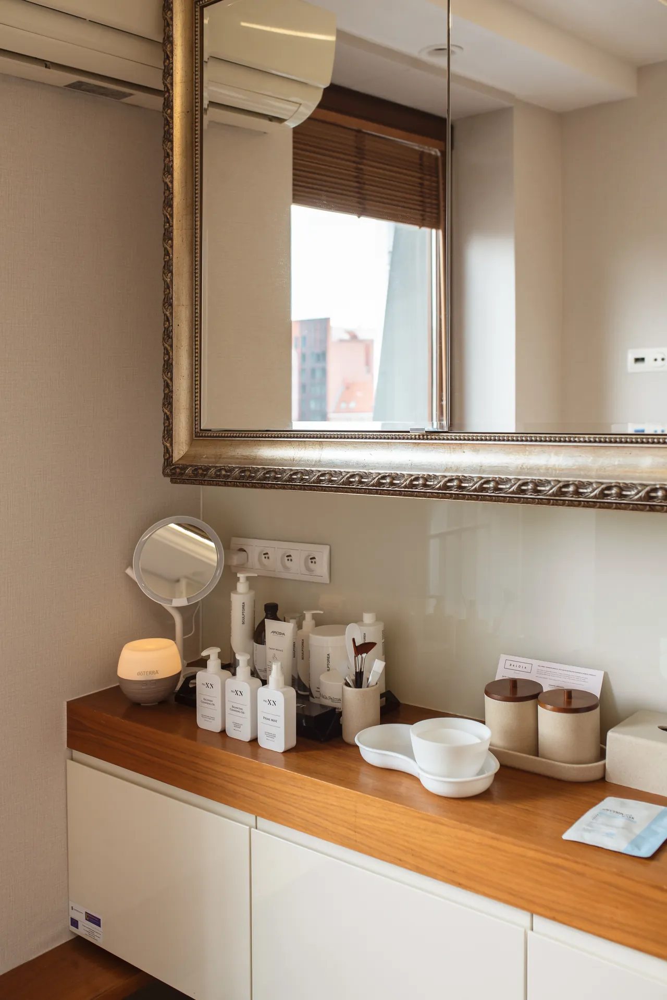
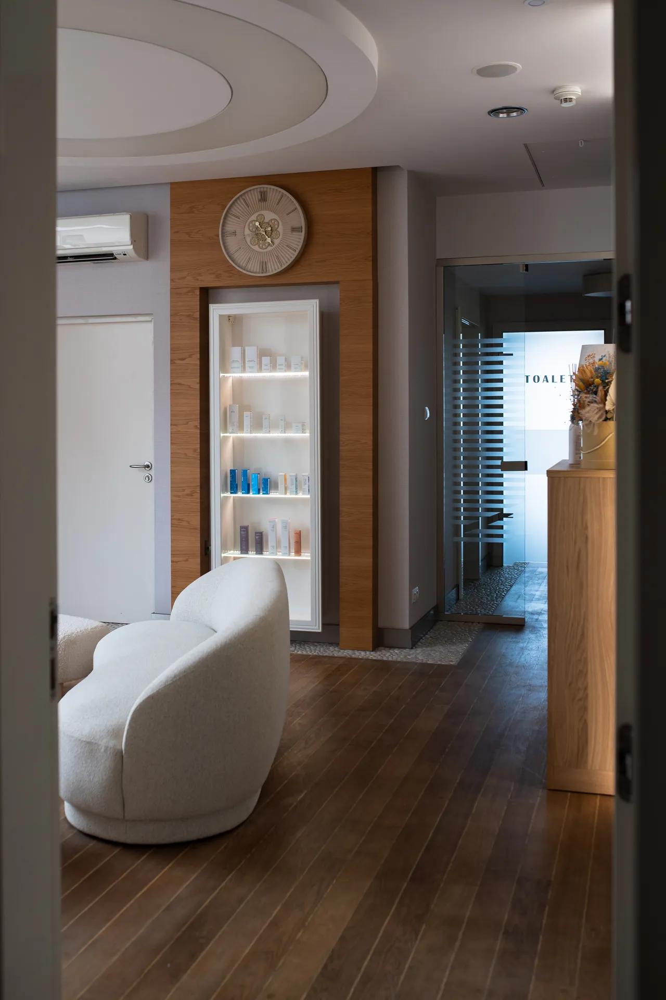

Home care
The professional skincare we work with. Ask about home care after your treatment.


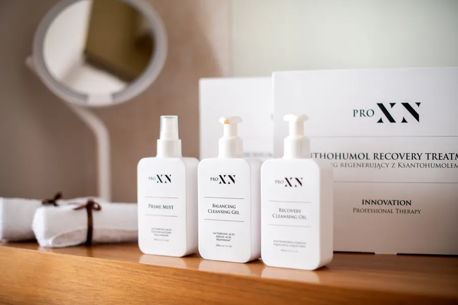

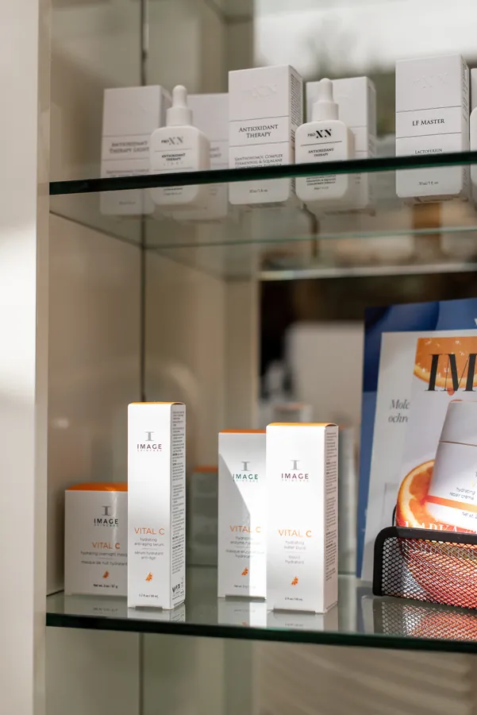

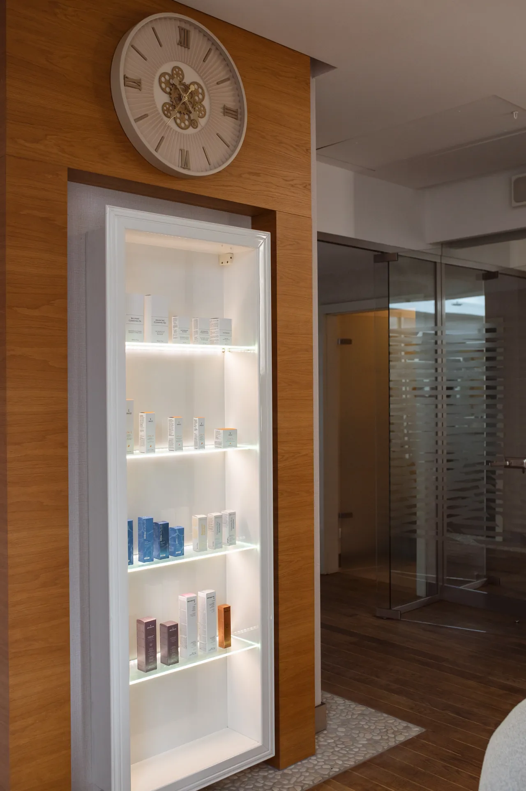


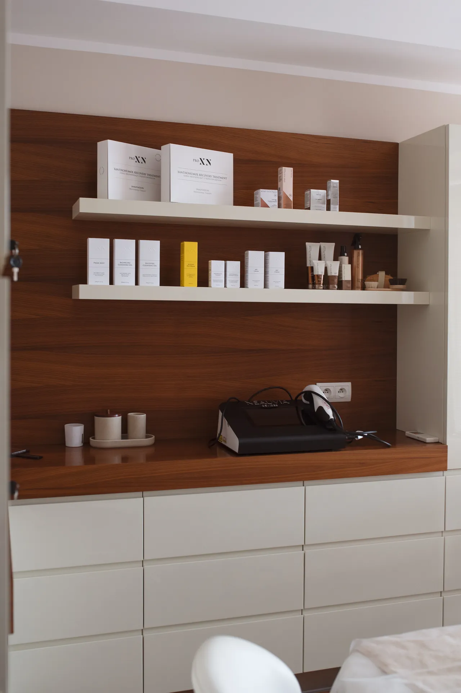
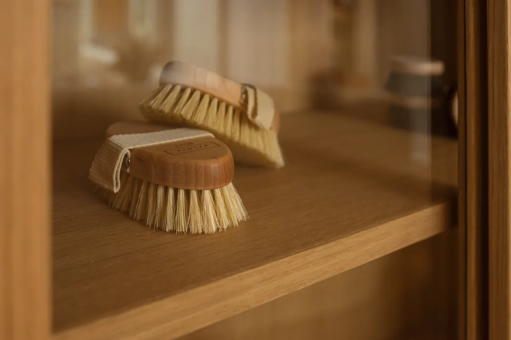

A private sauna area
When you book a treatment with us, you can reserve the whole sauna area just for yourself in advance. Combine your treatment with the saunas and spend a whole afternoon or evening with us.
- Three saunas: Finnish, steam and infrared
- A relaxation area with drinks
- Showers
- Towels
- Bathrobes
- Slippers
- Disposable underwear
We are also open on Saturdays, Sundays and selected public holidays.